HDD: Hard Disk Drive
Un disco duro o HDD (Hard disk drive) es un dispositivo de almacenamiento de datos que utiliza un sistema magnético para guardar y recuperar archivos digitales de forma permanente.
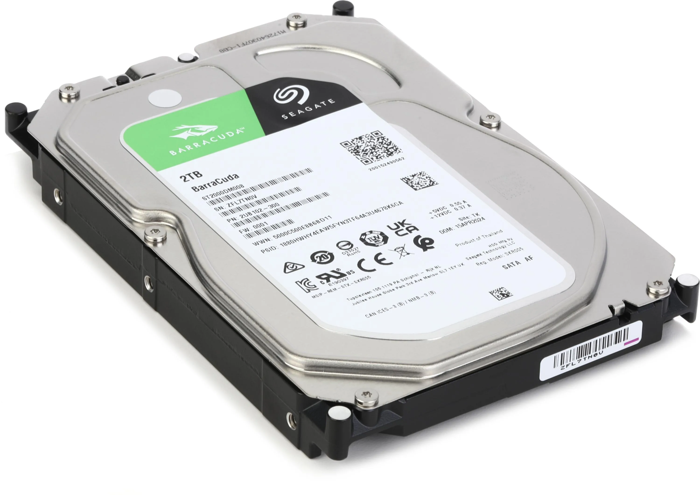

Un disco duro o HDD (Hard disk drive) es un dispositivo de almacenamiento de datos que utiliza un sistema magnético para guardar y recuperar archivos digitales de forma permanente.

Un SSD (Solid State Drive) es un dispositivo de almacenamiento de datos que guarda la información usando chips de memoria electrónica en lugar de discos magnéticos.
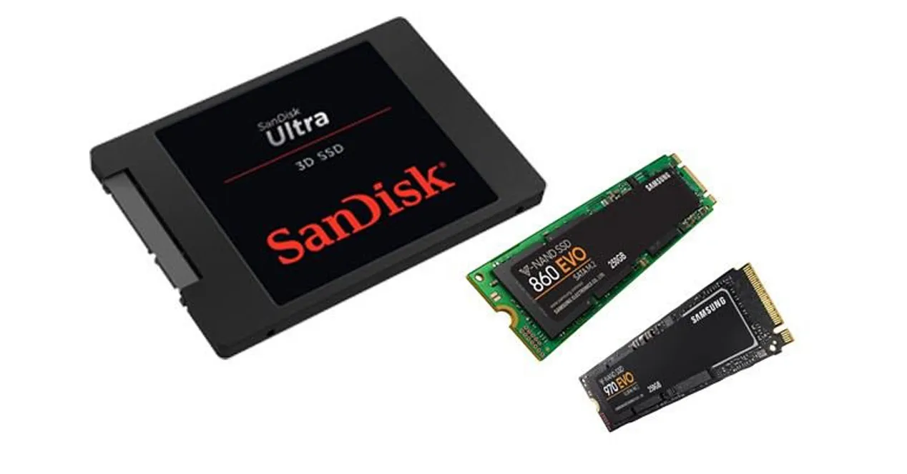
Una fuente de alimentación ATX es un dispositivo que convierte la corriente alterna (AC) de la toma de corriente en corriente continua (DC) necesaria para alimentar los componentes internos de una computadora.

Un lector de discos es un dispositivo que permite leer y escribir datos en discos ópticos, como CD, DVD o Blu-ray.
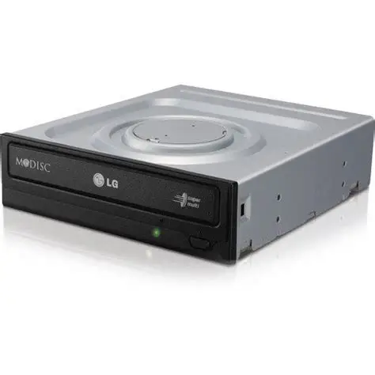
Un DIMM (Dual In-line Memory Module) es un tipo de módulo de memoria que se inserta en la placa base de una computadora para proporcionar almacenamiento temporal de datos y programas en ejecución.
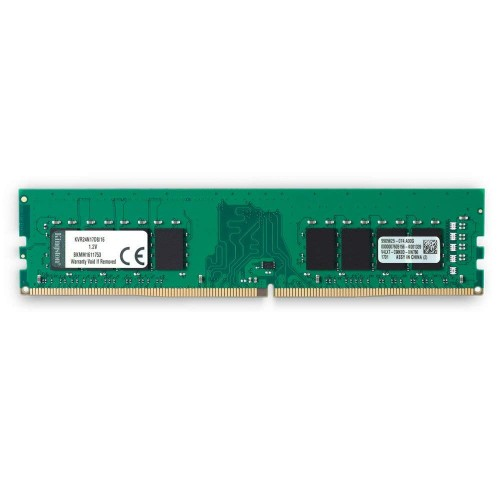
Un SO-DIMM (Small Outline Dual In-line Memory Module) es un tipo de módulo de memoria más pequeño y compacto que se utiliza principalmente en computadoras portátiles, mini-PCs y otros dispositivos con espacio limitado.
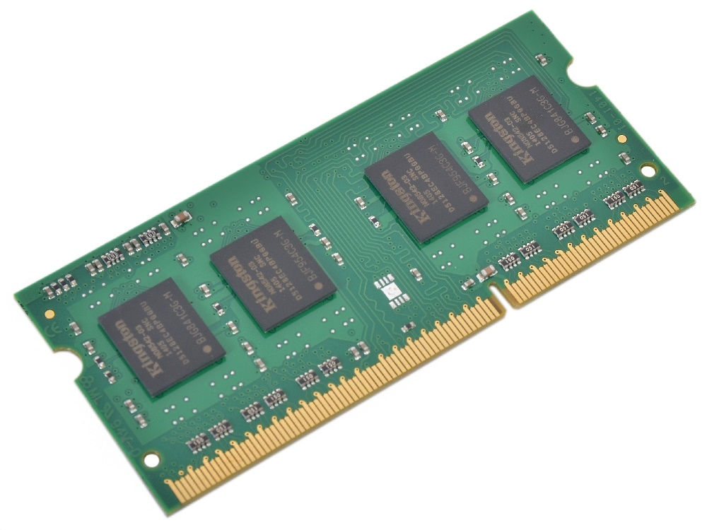
DDR2 (en Tarjetas Gráficas): Memoria de sistema adaptada a GPUs de bajo coste a mediados de los 2000. Opera a 1.8 V con frecuencias de 400 a 800 MHz y prefetch de 4 bits, priorizando la reducción de costes sobre el rendimiento gráfico.
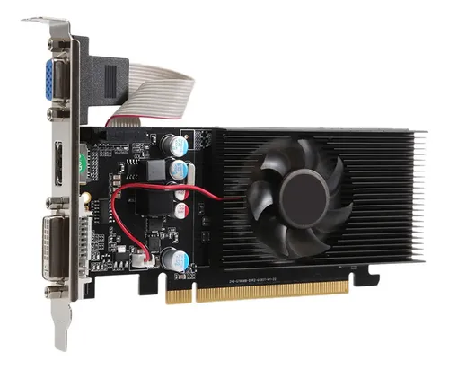
DDR3 (en Tarjetas Gráficas): Memoria de sistema reutilizada en GPUs de gama baja a partir de 2007. Funciona a 1.5 V con frecuencias de 800 a 1800 MHz y prefetch de 8 bits, ofreciendo mayor eficiencia energética y velocidad que DDR2 a un coste reducido.
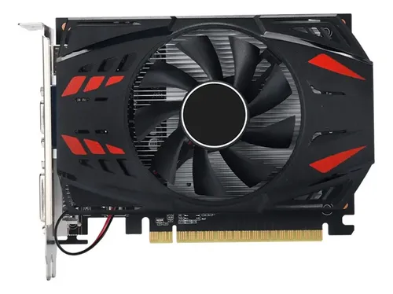
GDDR2 (Graphics Double Data Rate 2) es un tipo de memoria de acceso aleatorio (RAM) que se utiliza en tarjetas gráficas y otros dispositivos electrónicos para almacenar y acceder a datos de manera rápida y eficiente.
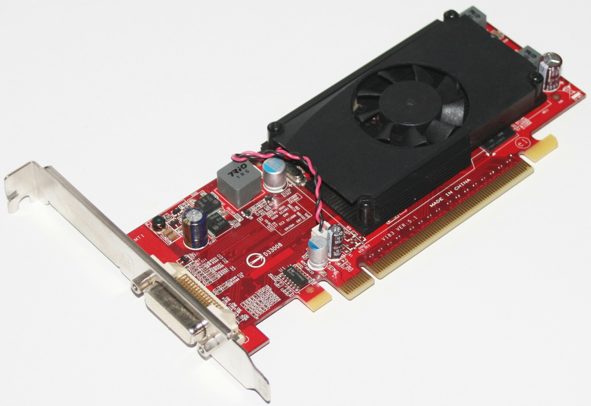
GDRR3 (Graphics Double Data Rate 3) es un tipo de memoria de acceso aleatorio (RAM) que se utiliza en tarjetas gráficas y otros dispositivos electrónicos para almacenar y acceder a datos de manera rápida y eficiente.
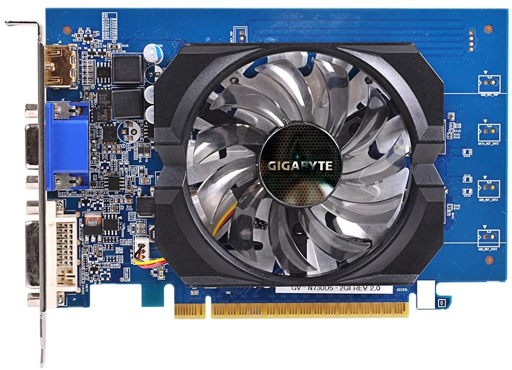
AM4 Uno de los sockets más populares de AMD, lanzado en 2016 para dar vida a la familia de procesadores Ryzen. Su mayor logro fue mantenerse como estándar durante casi una década (dando soporte desde los Ryzen 1000 hasta los Ryzen 5000), lo que permitió a los usuarios actualizar el procesador sin necesidad de cambiar de placa base.
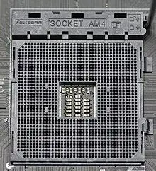
AM2: Socket de procesador comercializado por AMD a partir de 2006 para sus líneas Athlon 64, Sempron y Opteron. Ganó gran popularidad por introducir el soporte nativo para memorias RAM DDR2, manteniéndose vigente en el mercado durante varias generaciones de procesadores hasta ser sucedido por el socket AM2+.
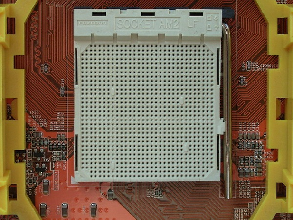